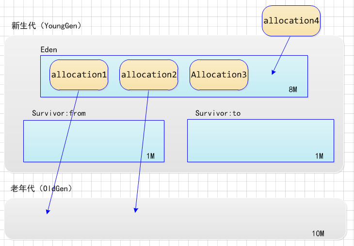
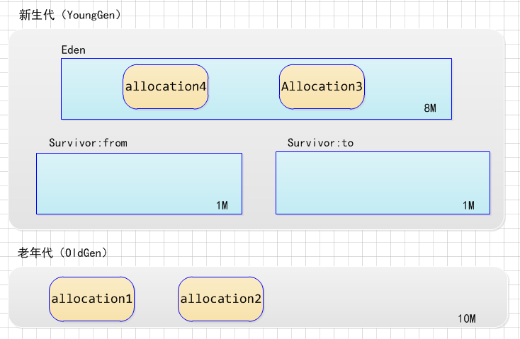

对象的内存分配，往大方向讲，就是在堆上分配（但也可能经过JIT编译后被拆散为标量类型并间接地栈上分配），对象主要分配在新生代的Eden区上，如果启动了本地现成分配缓冲，将按线程优先在TLAB上分配。少数情况下也可能会直接分配在老年代中，分配的规则并不是百分之百固定的，其细节取决于当前使用的是哪一种垃圾收集器组合，还有虚拟机中与内存相关的参数设置。
——《深入理解Java虚拟机》
大多数情况下，对象在新生代Eden区中分配。当Eden区没有足够空间进行分配时，虚拟机将发起一次Minor GC。在Minor GC执行的时候，存活下来的对象将被复制到Survivor区。如果Survivor没有足够空间的时候，将会有一部分对象被迁移到老年代。
随着Minor GC的不断进行，老年代中的对象也会越来越多，当老年代内存紧张的时候，就会触发Full GC。通常Full GC会对整个堆进行回收。
如下示例：
在运行时通过-Xms20M、 -Xmx20M、 -Xmn10M这3个参数限制了Java堆大小为20MB，不可扩
展，其中10MB分配给新生代，剩下的10MB分配给老年代。 -XX：SurvivorRatio=8(默认)决定了新生代中Eden区与一个Survivor区的空间比例是8:1:1(Survivor中有两块区域：from, to)

执行testAllocation()中分配allocation4对象的语句时会发生一次Minor GC，这次GC的结果是新生代7500KB变为998KB，而总内存占用量则几乎没有减少（因为allocation1、allocation2、 allocation3三个对象都是存活的，虚拟机几乎没有找到可回收的对象）。 这次GC发生的原因是给allocation4分配内存的时候，发现Eden已经被占用了6MB，剩余空间已不足以分配allocation4所需的4MB内存，因此发生Minor GC。 GC期间虚拟机又发现已有的2个2MB大小的对象全部无法放入Survivor空间（Survivor空间只有1MB大小），所以只好通过Handle Promotion机制提前转移到老年代去。

这次GC结束后，4MB的allocation4对象顺利分配在Eden中，因此程序执行完的结果是
Eden占用6MB（被allocation4和其中一个2Mallocation占用），Survivor空闲，老年代被占用4MB（被两个2Mallocation占用）。
Copying算法
现在的商业虚拟机都采用这种收集算法来回收新生代，IBM公司的专门研究表明，新生代中的对象98%是“朝生夕死”的，所以并不需要按照1:1的比例来划分内存空间，而是将内存分为一块较大的Eden空间和两块较小的Survivor空间，每次使用Eden和其中一块Survivor。当回收时，将Eden和Survivor中还存活着的对象一次性地复制到另外一块Survivor空间上，最后清理掉Eden和刚才用过的Survivor空间。 HotSpot虚拟机默认Eden和Survivor的大小比例是8:1:1。 当Survivor空间不够用时，需要依赖其他内存（这里指老年代）进行分配担保（Handle Promotion）。
在GC开始的时候，对象只会存在于Eden区和名为“From”的Survivor区，Survivor区“To”是空的。紧接着进行GC，Eden区中所有存活的对象都会被复制到“To”，而在“From”区中，仍存活的对象会根据他们的年龄值来决定去向。年龄达到一定值(年龄阈值，可以通过-XX:MaxTenuringThreshold来设置)的对象会被移动到年老代中，没有达到阈值的对象会被复制到“To”区域。经过这次GC后，Eden区和From区已经被清空。这个时候，“From”和“To”会交换他们的角色，也就是新的“To”就是上次GC前的“From”，新的“From”就是上次GC前的“To”。不管怎样，都会保证名为To的Survivor区域是空的。Minor GC会一直重复这样的过程，直到“To”区被填满，“To”区被填满之后，会将所有对象移动到年老代中。